剑匕首，直伤元晶 简易循环 37k，1:1复刻SC，7.26改
闪电风暴，大雷=F5反色，极化跳跃，风驰电掣，量子打击，小土|大火=无情灼焰，闪电风暴，极化跳跃，风驰电掣，量子打击，地动山摇，大地翻腾，大火=秘法爆弹，烈焰之攫，炙火之环，烧灼打击，火焰升腾，武器2黑=大火=元素迅捷，锈蚀之怒，火焰风暴，大地=小火，火焰升腾=1=大火=小电，F5雷=大雷=小火黑=小土|大火=F5反色，大地=F5反色|
闪电风暴,8,1080|大雷,,,,,,,,,,,,,,,,,,,触发,0,,0,,5|F5反色,f5,1,,,,,,,ifnot,,,,,,,,,,触发,0,,0,,10|极化跳跃,2,550|风驰电掣,4,116|量子打击,3,680|小土,f5,1,f4,150,f5,10,4,680,,,,,,,,,,,触发,0,,1,,5|大火,,,,,,,,,,,,,,,,,,,触发,0,,0,,5|无情灼焰,7,239|地动山摇,4,683|大地翻腾,5,954|秘法爆弹,9|烈焰之攫,5,560|炙火之环,4,560,,,,,,,,,,,,,,,,,触发,0,,1|烧灼打击,3,650|火焰升腾,2,150,,,,,,,,,,,,,,,,,触发,0,,1|武器2黑|元素迅捷,0,237|锈蚀之怒,3,1450|火焰风暴,8,1122|大地,,,,,,,,,,,,,,,,,,,触发,0,,0,,5|小火,f1,150,f5,1,7,250,2,550,,,,,,,,,,,触发,0,,1|小电,f5,1,f3,150,2,550,,,,,,,,,,,,,触发,0,,1|F5雷,,,,,,,,,,,,,,,,,,,触发,0,,0,,30|小火黑,,,,,,,,,ifnot
[&DQYfHSkfQyYnDwAA+BoAAL4BAABQAQAA9xoAAAAAAAAAAAAAAAAAAAAAAAACWgAvAAA=]
狂战套、猎龙 剑匕首 武勇、冲击，克达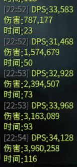
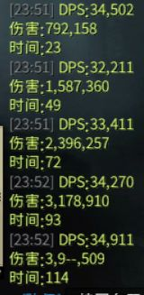
最新的修改了下，改了部分延迟，增加了起手的判断。
1蛋糕，0灌注
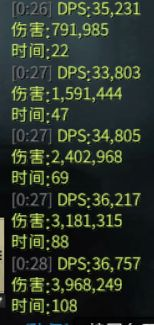
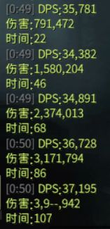
芦笋牛排+磨刀+90灌注
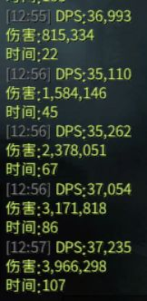
7.26优化后，如果想更高输出，单独调节技能比较难，建议降低全局延迟，例如0.9降低到0.88-0.85等，提升幅度在300-500之间。
循环来自油管
dps日志地址：
https://dps.report/9TgL-20260716-113317_golem
本文介绍，需要有一定基础，元晶相比编织难度更小。
首先要区分，切姿态的特点
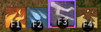
有边框的为 大协调，例如大雷、大火、大土
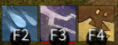
无边框的为小协调，为小雷、小火、小土
小协调是作为切下个姿态的功能，例如
大地=小火，地切火，跟随F1
火焰升腾=2=大火=小电，火切电，跟随F3
大雷=小土，电切土，跟随F4
明白以上后，开始讲解循环。
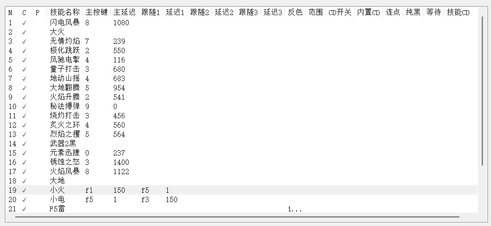
对于按键取色，没有特别的设置，目前是基于能正常完整循环为优先。
唯一有难点的就是姿态的取色。
涉及姿态的包括以下循环
大地=小火，火焰升腾=2=大火=小电，F5雷=大雷=小火黑=小土
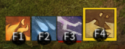
大地=小火，大地取图标左上角，或者中心，或者边框
小火取，小图标中心，或者左上角。
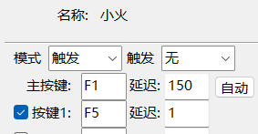
因为是从土切火，所以小火作为触发条件，要设置按键F1，跟切到火后瞬间按下的F5。
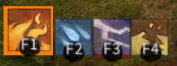
切到火后，需要使用2次，火2，才会切到电，这是标准循环。
火焰升腾=2=大火=小电，所以小电是作为触发条件。
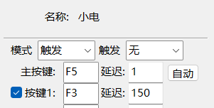
这里F5是作为备用方案，在切之前，确保用掉火的F5
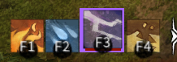
F5雷=大雷=小火黑=小土，小土是最作为触发条件，雷切到土
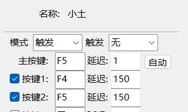
切土之前，确保电的F5用掉，然后切到土后，马上用F5
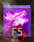
重点来了，这个循环的 F5雷=大雷=小火黑=小土
要实现SC中的，要等F5能量满同时，又要在火协调快好的时候，切到土，需要做以下判断。
F5雷=大雷=小火黑=这是前置条件。
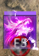
其中F5雷，是获取F5能量的结尾，也就是，右上角的那个紫色结尾。
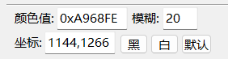
直接取能量满的时候，紫色加上模糊度。
或者使用 取色黑条结尾，勾选反色+模糊度也可以，根据实际情况来。
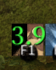
那么小火黑，就需要获取，F1冷却时，左上角的黑色，也就是即将冷却的时候，同样用反色表示。
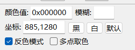
小火黑，意思就是，当左上角不为黑色，那么表示即将冷却完毕，这时候
F5雷=大雷=小火黑=小土，切土，刚好实现土放完4+5后，火马上冷却好，可以直接切。
另外， 由于实战中，使用切姿态的条件跟随F5，有时候需要等切的时候才会放出去。
那么需要在独立循环中加入2个条件，实时判断。
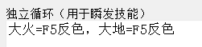
表示，在大火、大地状态下，F5只要可用，就立马放出去。
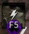
那么条件也是非常简单，就是当能量不足时，图标中心是闪电，只需要获取闪电中心，并勾选反色。
大火=F5反色，大地=F5反色
表示，在火、土协调下，F5只要有能量，就直接用。
各位可基于当前循环的思路，自行修改。
最后，在前几个版本中，模糊度参数有问题，导致实际并不生效，最新现已修复。
评论列表（4）
再次启动游戏还是要重新取色f1f2f3f4要不然不切协调
@圣光 加点模糊度，元素是有这个问题，有概率的
@melis 然后大佬 ,是你上传的症状编织么 ,怎么没了
@圣光 那个有问题，实战中不太行，删了后面改好再传。